Case 01 — 國小程式學習網站
RightCode 來code
用程式創造未來，用英語與世界接軌。

01
起心動念
程式語言納入 108 課綱、2030 雙語政策上路，孩子被要求同時學會兩件事，但市面上的資源沒有跟上。
29%
孩子覺得程式「太複雜」
26.3%
對程式沒有興趣
45%
家長認為現有平台內容枯燥
問題不是孩子學不會，而是他們不知道從哪裡開始。
02
使用者研究
244 份問卷，對象涵蓋國小、國中、高中生與家長。
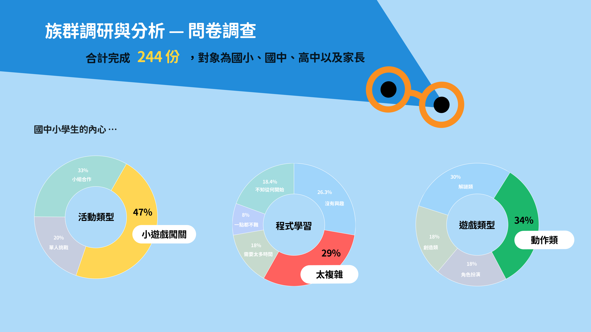
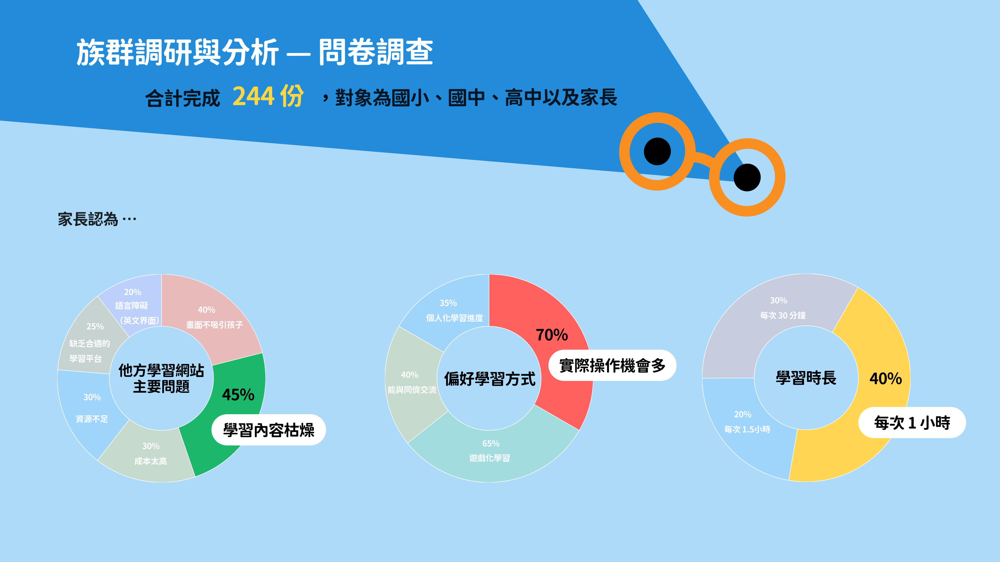
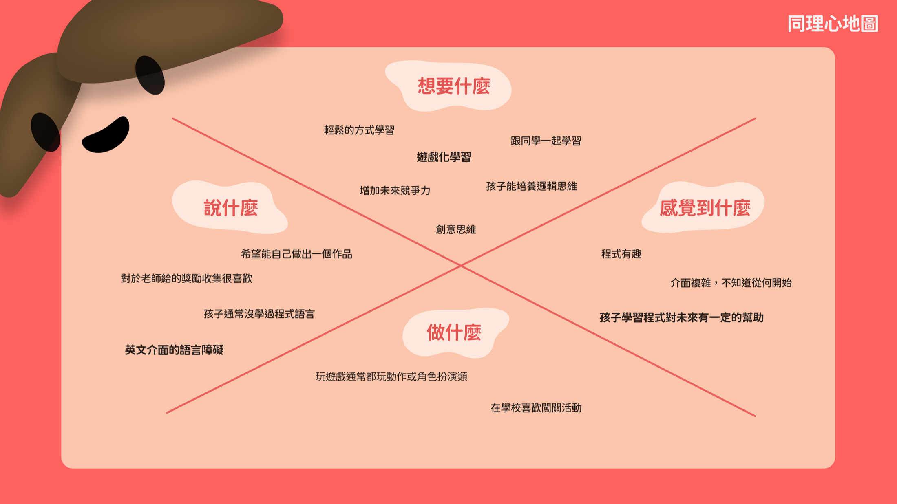
林美美
10 歲，國小生
- 對程式充滿熱情，但自學時感到困惑
- 喜歡動作與角色扮演遊戲
- 希望學習像玩遊戲一樣輕鬆
- 想學會自己做一個網頁
顏小明
37 歲，8 歲孩子的家長
- 希望孩子培養邏輯與創意思維
- 課程不能枯燥，要能快樂學習
- 需要進度追蹤與獎勵機制
- 預算：免費或每月 500 元內
03
從限制裡找機會
現有平台不是不夠多，是沒有一個同時處理「中文介面」與「玩得下去」。
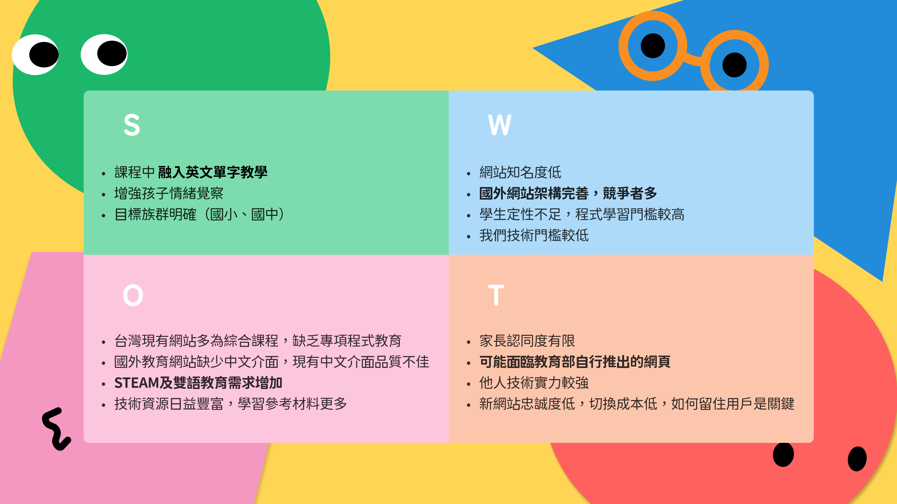
-
A
故事啟發，提問思考
用生活比喻帶出標籤概念——粗的像電線杆、斜的像溜滑梯，先有畫面再有語法。
-
B
課後遊戲，小試身手
每個單元收在一題選擇題，答錯不扣分，只給回饋，降低出手的門檻。
-
C
IP 設計，學習不無趣
四隻角色貫穿全站，把冒險地圖變成孩子看得懂的學習進度。
04
資訊架構：砍掉一半
初版塞了論壇與職業介紹，但那是給大人看的。定版只留孩子會用到的三條主線。
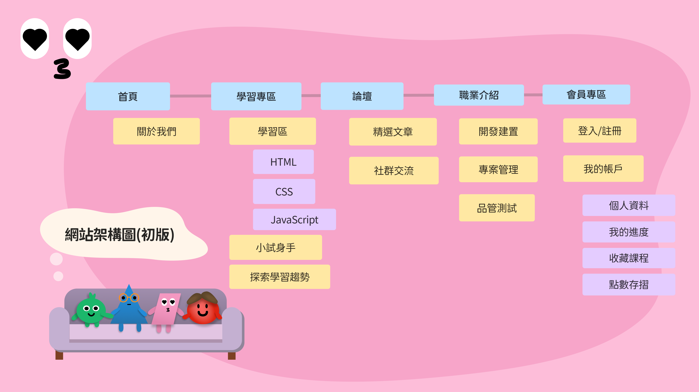
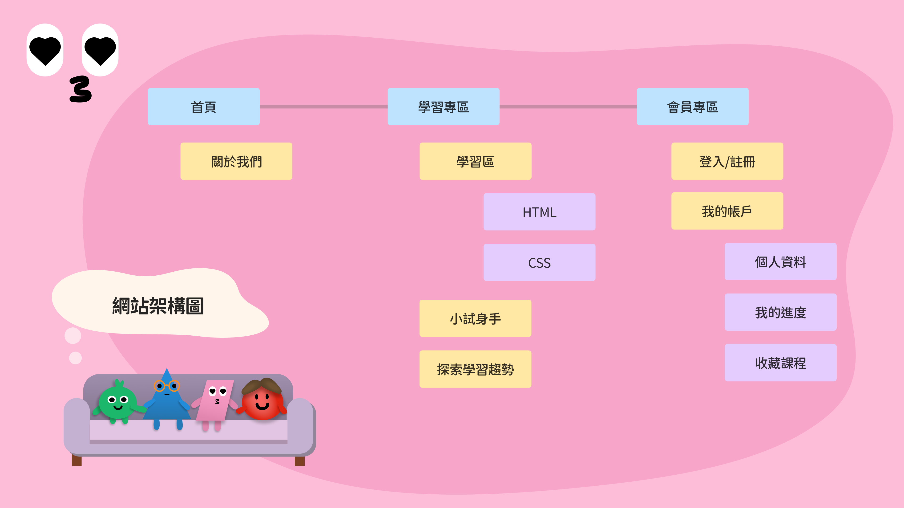
（寫下你們為什麼做這個取捨——面試官會追問的就是這一段。）
05
線框稿與視覺系統
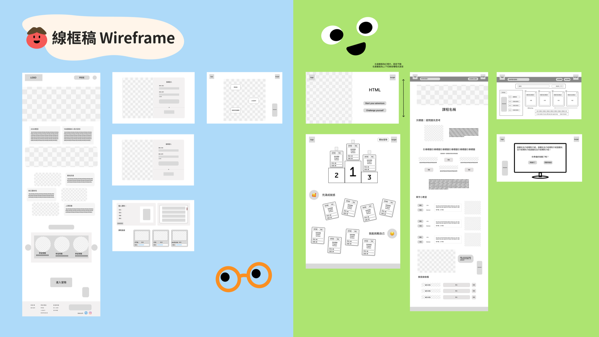
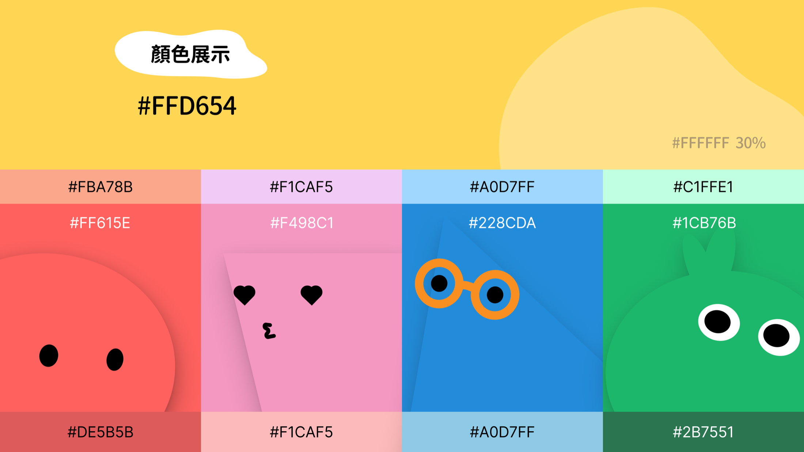
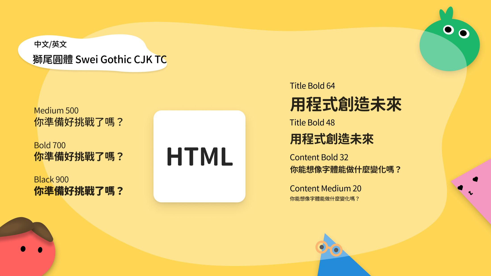
06
首頁的四次改版
從線框稿到上線，首頁一共重畫四次。每一次都在解一個具體的問題。
-
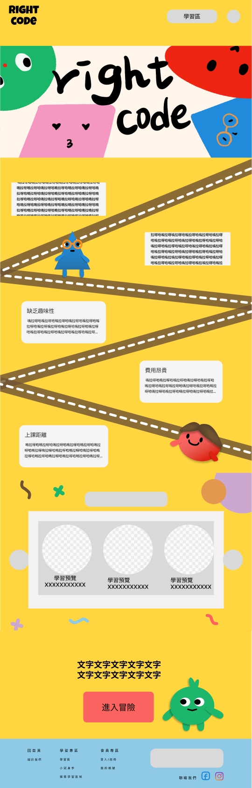
v1
區塊排好，但每一段長得一樣，孩子不知道要往哪看。
-
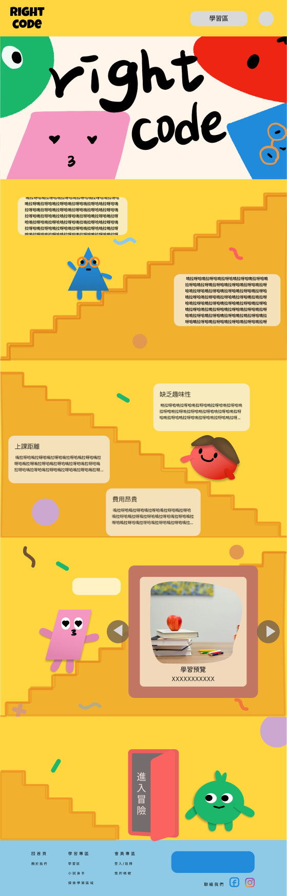
v2
導入冒險路徑串起內容，但折線太銳利，跟角色的圓潤感打架。
-
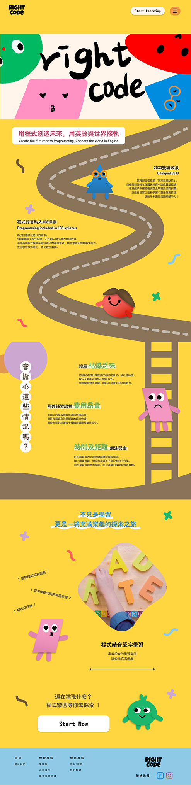
v3
路徑改成曲線並補上中英雙語標題，資訊密度仍偏高。
-
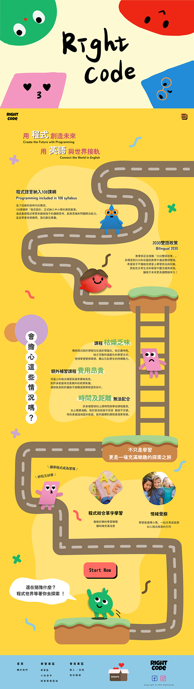
v4 · 定版
拉大留白、統一為一條主動線，Start Now 成為畫面唯一終點。
07
最終介面
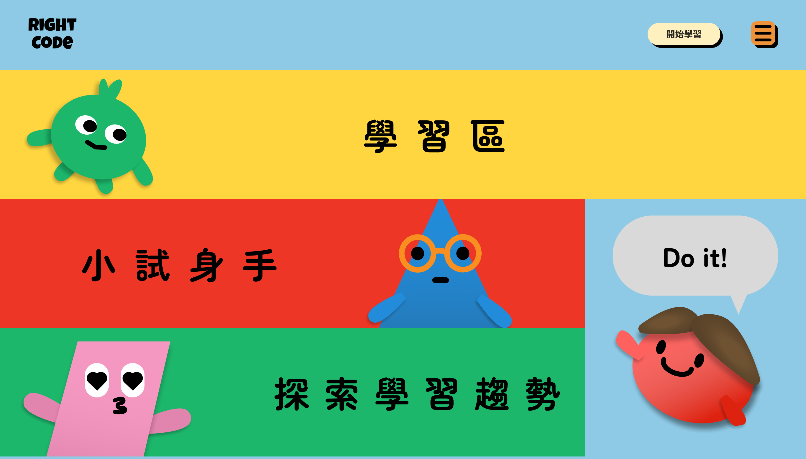
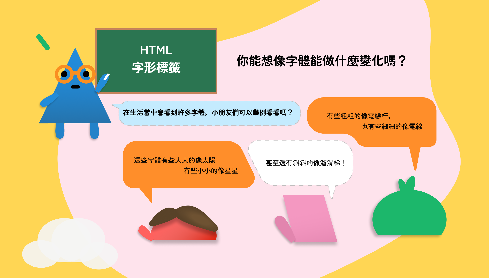
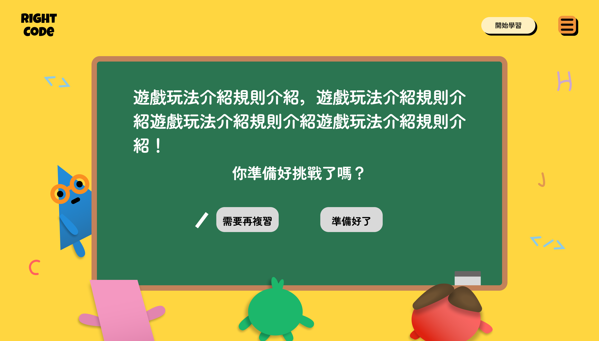
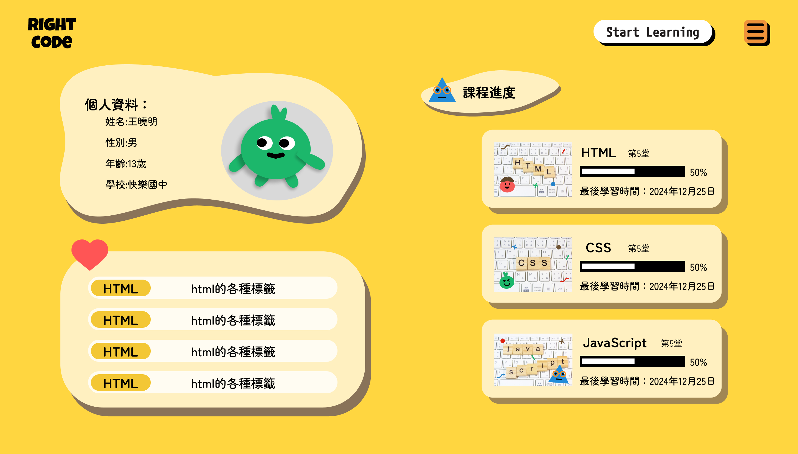
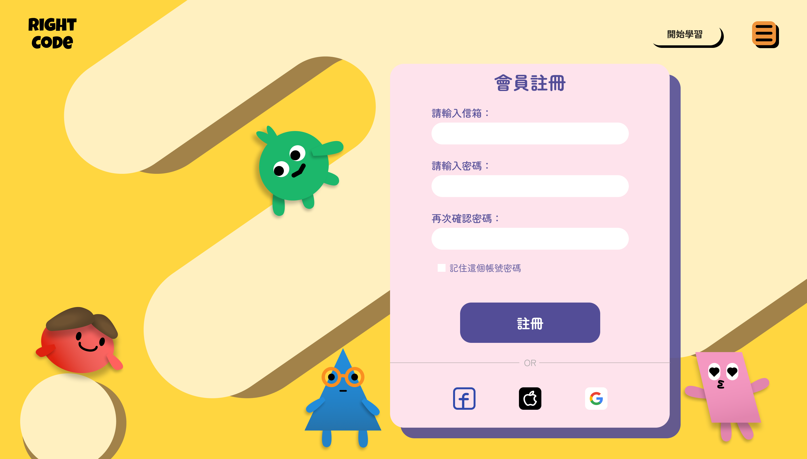